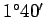

Inhalt Index DeskTop Bronstein

 Geometrie Sphärische Trigonometrie Grundbegriffe der Geometrie auf der Kugel Spezielle Koordinatensysteme
Geometrie Sphärische Trigonometrie Grundbegriffe der Geometrie auf der Kugel Spezielle Koordinatensysteme


Um Teile der gekrümmten Erdoberfläche winkeltreu (konform) auf eine Ebene abzubilden, geht man beim GAUSS-KRÜGER-System von einer Einteilung in Meridianstreifen aus. Für Deutschland liegen die Mittelmeridiane bei und ö. L. (linke Abbildung).
Der Koordinatenursprung jedes Meridianstreifensystems ist der Schnittpunkt des Meridians mit dem Äquator. In der Nord-Süd-Richtung gehen die Systeme über das gesamte Gebiet hinweg, in der Ost-West-Richtung sind die Gebiete beidseitig auf  begrenzt. In Deutschland sind das etwa . Die Überlappung von etwa entspricht hier ca. .
Der Dehnungsfaktor a in der Abszissenrichtung ist der gleiche wie im SOLDNER-System (3.180) (rechte Abbildung).
Damit die Abbildung winkeltreu bleibt, sind die Ordinaten an den Lotenden durch Addition eines Betrages b zu verlängern:
| (3.181) |